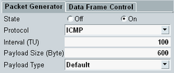

A WLAN connection to the mobile device is a prerequisite for all signaling tests, including the combined signal path measurement described in this application sheet. To set up the connection, proceed as follows:
Reset your R&S CMW to ensure a definite instrument state.
Open the configuration dialog of the WLAN signaling application.
Select a bidirectional RF connector, in this example RF 1 COM. If necessary, also adjust the "External Attenuation" .

Still in the configuration dialog, adjust the power-, frequency- and connection-related settings to the capabilities of your mobile device.
The "Operating Channel Width", "Frequency" and "Standard" must be supported by the DUT. The "RF TX Burst Power" and "RF Exp. Peak Envelope Power" settings must be in accordance with the incoming signal. An "RF TX Burst Power" of around -45 dBm is recommended.
Close the configuration dialog.
Right-click the softkey "WLAN Signaling". Select "ON" to activate the simulated WLAN AP.
Connect your DUT to RF 1 COM.
Switch the WLAN signaling application ON.
Observe the "Connection Status" area in the main view. Wait until the DUT has entered the "Associated" state.

After the DUT has completed its association, the "Mobile Capabilities" values are displayed in the main view.
Enable the "Packet Generator" with protocol ICMP ("Ping").
Set the ICMP "Payload Size" to 600 bytes.

Failed connection A network connection fails if the WLAN DL signal settings and the device's capabilities do not match. For tips on troubleshooting, see "Checks if the association fails". |